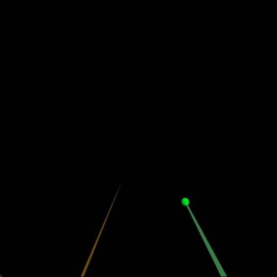
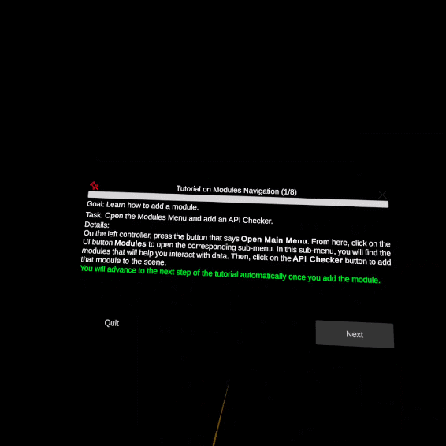
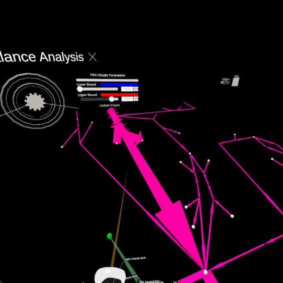

Tutorial on the workflow with modules
Warning
Please, make sure that you can connect to Kosmogora
The purpose of this tutorial is to learn how to manipulate some of the modules in ECellDive as well as the communication workflow between ECellDive and Kosmogora. In this tutorial, we will learn how to manually reach the same state as the demo where everything is pre-computed.
Duration
it usually takes around 40 minutes to complete this tutorial (it all depends how long you wish to freely explore the model before moving to another step). Novices that had not tried VR before ECellDive were not any slower than experts if they had taken the tutorial on controls beforehand. Therefore, we recommend everybody to start with tutorial on controls.
Launch the Tutorial
This tutorial is accessible through the general tutorial menu. The steps to find it are:
- Open the main menu
- Click on the button Tutorials
- Click on the button Modules
Example
Step 1
Goal
Learn how to add a module.
Task
Open the Modules Menu and add a API Checker.
Details
On the left controller, press the button that says Open Main Menu. From here, click on the UI button Modules to open the corresponding sub-menu. In this sub-menu, you will find the modules that will help you interact with data. Then, click on the API Checker button to add that module to the scene.
Note
You will automatically advance to the next step of the tutorial once you add the module.
Example
Step 2
Goal
Learn how to connect to a Kosmogora server.
Task
Enter the server’s contact information and check its API is compatible.
Details
Open the menu of the API Checker. Input the IP address of the Kosmogora server. Also add a port if you did specified one when launching Kosmogora. Enter the name of the server; chose any name you want, it will only be used for display in the future (default is Kosmogora). Finally click on the button Check Server API.
Doing so, an HTTP request will be sent to Kosmogora asking for the list of the API it implements. This list will be compared to the modules’ requirements in ECellDive and will all be unlocked accordingly. However, for this tutorial, modules will be unlocked on at a time.
Note
You will automatically advance to the next step of the tutorial once you add the module.
Example

Step 3
Goal
Learn how to import data from a server (1/2).
Task
Open the Modules Menu and add a Data Importer.
Details
Go back to the UI Modules Menu that you previously used to add a API Checker to the scene.
This time, click on the Data Importer button to add a module that will fetch the data available on Kosmogora.
Note
You will automatically advance to the next step of the tutorial once you add the module.
Example

Step 4
Goal
Learn how to import data from a server (2/2).
Task
Add the data module of iJO1366 to the scene.
Details
Open the menu of the data importer. Click on the button Server to select the server from where to import data. There should only be one corresponding to the server you validated with the API Checker at step 2. Then, click on the button Get Models List to query the available models and select iJO1366 on the second panel.
Note
You will automatically advance to the next step of the tutorial once you add iJO1366 to the scene.
Example

Step 5
Goal
Learn how to dive into a module.
Task
Dive and explore the network.
Details
Point at the data module iJO1366 you just imported with the Ray-Based Controls and press the primary button. This will open the information menu of this module as well as the portal associated with this data module. To dive in the module, point at the portal with the Ray-Based Controls and hold the primary button.
Warning
The loading of the next dive scene will take a about seconds and framerate will drop significantly
Click the button Next on the tutorial panel when you are ready to move on to the next step.
Example

Step 6
Goal
Learn how to request a Flux Balance Analysis (1/2).
Task
Add a FBA module to the dive scene via Modules Menu.
Details
Do not hesitate to move around and explore the network.
Note
You can click on the red pin icon of the tutorial panel to pin the panel to your position. This way, the panel will follow you when you move. The panel is successfully pinned to you when the pin icon is green.
Go back to the Modules Menu that you previously used to add the API Checker and Data Importer to the scene. This time, click on the button FBA to add a FBA module.
Note
You will automatically advance to the next step of the tutorial once you add the FBA module to the scene.
Example

Step 7
Goal
Learn how to request a Flux Balance Analysis (2/2).
Task
Request the FBA from the server.
Details
Open the menu of the FBA module. Open the menu of the FBA module and press the button Server to select the server where to perform the FBA. There should only be one choice corresponding to the server you validated with the API Checker at step 2. Once you selected the server, click on the button Run FBA to request the simulation from the server.
Warning
It will take a few seconds. The duration depends on the quality of the network you are on.
The result of the FBA will be clearly visible as the edges's widths are scaled according to the value of the fluxes.
Example

You can use the options to clamp the values or set a color gradient.
Example
Warning
You can see some strange green pixels in this gif. This is due to the recording system, they are not present in ECellDive.

You can also KNOCKOUT reactions by pointing at the edges with the Ray-Based Controls and pressing the front trigger. Then, click on Run FBA again to update the simulation. When a reaction is knocked out, the texture of the arrow will change (gradients of gray with wholes).
Example
Step 8
Goal
Learn how to make groups.
Task
Add a GroupBy module and make groups.
Details
Go to the Modules Menu and click on the button Group By Operator to add the module in the scene. Open its menus (point + primary button) and group the nodes and/or the edges according to one of their respective metadata.
Note
Only ONE metadata can be selected for each object.
We recommend grouping edges and nodes according to Subsystems and Compartments respectively. Once you have selected your metadata of interest, click on Process Grouping. Check the Groups Menu if you want o change the default color of the generated groups.
Example